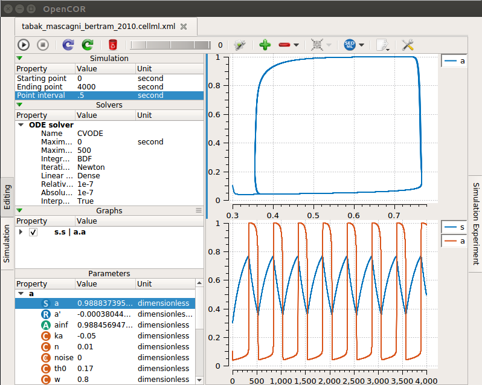

Models for the paper:
Tabak J, Mascagni M, Bertram R (2010) Mechanism for the universal pattern of activity in developing neuronal networks.
J Neurophysiol 103:2208-21
[PubMed]
are available at the cellml.org website:
https://models.cellml.org/e/44/tabak_mascagni_bertram_2010.cellml/view
Example Figure 7AB:
Open the model file in opencor. Change the ending point to 4000
sec. Create one extra graph (click + sign). Right-click "a" in "a"
list (select Plot against then click "s" -> "s"). Select the other
graph and add one at a time "a" and then "s" selecting in each case
to Plot against the integration variable. Finally run each (click
upper left play triangle) to create the following graphs similar to
fig 7AB although the noise current is absent in the model:
